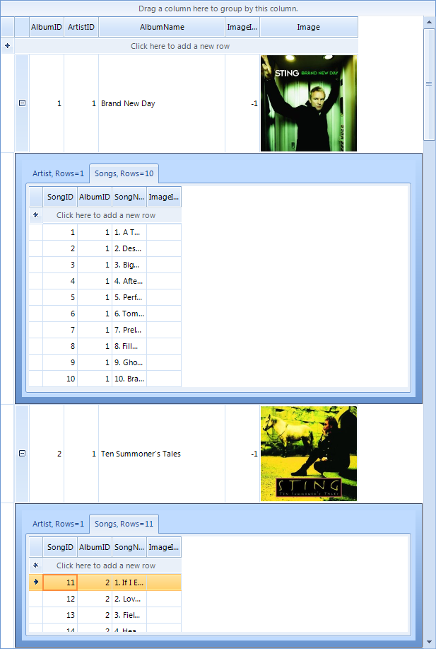

Hierarchy of one to many relations
RadGridView supports binding to a hierarchy containing one to many relations. The result is presented in tabs inside child views.
Follow these steps to setup the hierarchy:
1. Bind to a data source (e.g. DataTable)
2. Add at least two child templates and set their data source.
3. Add relations to connect the child templates with the master template.
4. Run the project.
[C#] Hierarchy of one to many relation
private void HierarchyOfOneToManyRelation_Load(object sender, EventArgs e)
{
this.songsTableAdapter.Fill(this.musicCollectionDataSet.Songs);
this.artistsTableAdapter.Fill(this.musicCollectionDataSet.Artists);
this.albumsTableAdapter.Fill(this.musicCollectionDataSet.Albums);
this.radGridView1.DataSource = albumsBindingSource;
radGridView1.Columns["Image"].ImageLayout = ImageLayout.Zoom;
GridViewTemplate childTemplate1 = new GridViewTemplate();
childTemplate1.DataSource = artistsBindingSource;
childTemplate1.Columns["Image"].ImageLayout = ImageLayout.Zoom;
childTemplate1.Caption = "Artist";
this.radGridView1.MasterTemplate.Templates.Add(childTemplate1);
GridViewRelation relation1 = new GridViewRelation(this.radGridView1.MasterTemplate);
relation1.RelationName = "productmodel_productModelDescription";
relation1.ParentColumnNames.Add("ArtistID");
relation1.ChildColumnNames.Add("ArtistID");
relation1.ChildTemplate = childTemplate1;
this.radGridView1.Relations.Add(relation1);
GridViewTemplate childTemplate2 = new GridViewTemplate();
childTemplate2.DataSource = songsBindingSource;
childTemplate2.Caption = "Songs";
this.radGridView1.MasterTemplate.Templates.Add(childTemplate2);
GridViewRelation relation2 = new GridViewRelation(this.radGridView1.MasterTemplate);
relation2.RelationName = "productdescription_productModelDescription";
relation2.ParentColumnNames.Add("AlbumID");
relation2.ChildColumnNames.Add("AlbumID");
relation2.ChildTemplate = childTemplate2;
this.radGridView1.Relations.Add(relation2);
}
[VB.NET] Hierarchy of one to many relation
Private Sub HierarchyOfOneToManyRelation_Load(ByVal sender As System.Object, ByVal e As System.EventArgs) Handles MyBase.Load
Me.SongsTableAdapter.Fill(Me.MusicCollectionDataSet.Songs)
Me.ArtistsTableAdapter.Fill(Me.MusicCollectionDataSet.Artists)
Me.AlbumsTableAdapter.Fill(Me.MusicCollectionDataSet.Albums)
Me.RadGridView1.DataSource = AlbumsBindingSource
RadGridView1.Columns("Image").ImageLayout = ImageLayout.Zoom
Dim childTemplate1 As New GridViewTemplate()
childTemplate1.DataSource = ArtistsBindingSource
childTemplate1.Columns("Image").ImageLayout = ImageLayout.Zoom
childTemplate1.Caption = "Artist"
Me.RadGridView1.MasterTemplate.Templates.Add(childTemplate1)
Dim relation1 As New GridViewRelation(Me.RadGridView1.MasterTemplate)
relation1.RelationName = "productmodel_productModelDescription"
relation1.ParentColumnNames.Add("ArtistID")
relation1.ChildColumnNames.Add("ArtistID")
relation1.ChildTemplate = childTemplate1
Me.RadGridView1.Relations.Add(relation1)
Dim childTemplate2 As New GridViewTemplate()
childTemplate2.DataSource = SongsBindingSource
childTemplate2.Caption = "Songs"
Me.RadGridView1.MasterTemplate.Templates.Add(childTemplate2)
Dim relation2 As New GridViewRelation(Me.RadGridView1.MasterTemplate)
relation2.RelationName = "productdescription_productModelDescription"
relation2.ParentColumnNames.Add("AlbumID")
relation2.ChildColumnNames.Add("AlbumID")
relation2.ChildTemplate = childTemplate2
Me.RadGridView1.Relations.Add(relation2)
End Sub
There is an example demonstrating how to build hierarchy containing one-to-many relations in the demo application.
Formatting tabs
In some cases you may want to set custom text to the tabs of the child views different than
the text of the template's caption. In this case, the solution is to use the
[
Formatting events](/gridview/cells/formatting-cells)
that RadGridView exposes, and more specifically, the ViewCellFormatting event. This event will give you
access to the detail cell that contains the whole RadPageViewElement and from this element you will be
able to set the text of each tab separately. For example, if we need to display the count of the
rows in each view, we can use the following code snippet in order to apply our custom text:
[C#]
void radGridView1_ViewCellFormatting(object sender, CellFormattingEventArgs e)
{
GridDetailViewCellElement detailCell = e.CellElement as GridDetailViewCellElement;
if (detailCell != null)
{
for (int i = 0; i < detailCell.PageViewElement.Items.Count; i++)
{
// We take the view that contains the child rows from the corresponding RadPageViewStripItem
GridViewInfo info = (GridViewInfo)detailCell.PageViewElement.Items[i].Tag;
// We set our custom text to the tab, taking the count of rows that the child view has
detailCell.PageViewElement.Items[i].Text = string.Format("{0}, Rows={1}", info.ViewTemplate.Caption, info.Rows.Count.ToString());
}
}
}
[VB.NET]
Private Sub RadGridView1_ViewCellFormatting(ByVal sender As Object, ByVal e As Telerik.WinControls.UI.CellFormattingEventArgs) Handles RadGridView1.ViewCellFormatting
Dim detailCell As GridDetailViewCellElement = TryCast(e.CellElement, GridDetailViewCellElement)
If detailCell IsNot Nothing Then
For i As Integer = 0 To detailCell.PageViewElement.Items.Count - 1
' We take the view that contains the child rows from the corresponding RadPageViewStripItem
Dim info As GridViewInfo = CType(detailCell.PageViewElement.Items(i).Tag, GridViewInfo)
' We set our custom text to the tab, taking the count of rows that the child view has
detailCell.PageViewElement.Items(i).Text = String.Format("{0}, Rows={1}", info.ViewTemplate.Caption, info.Rows.Count.ToString())
Next i
End If
End Sub
The result is shown on the screenshot below:
